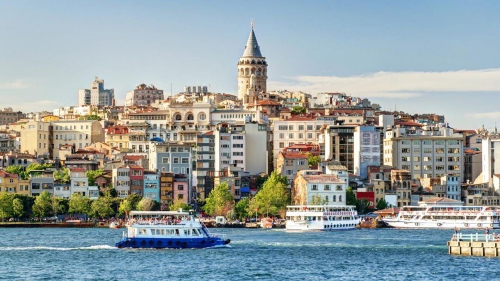
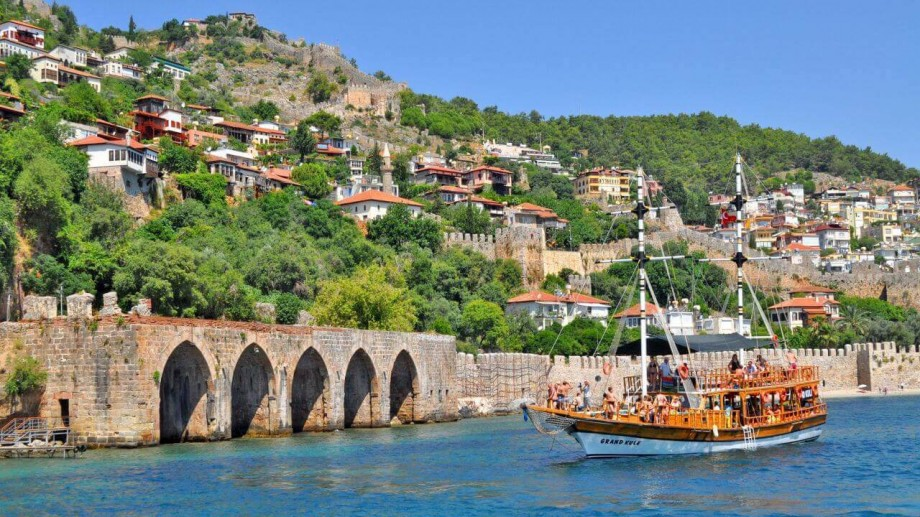
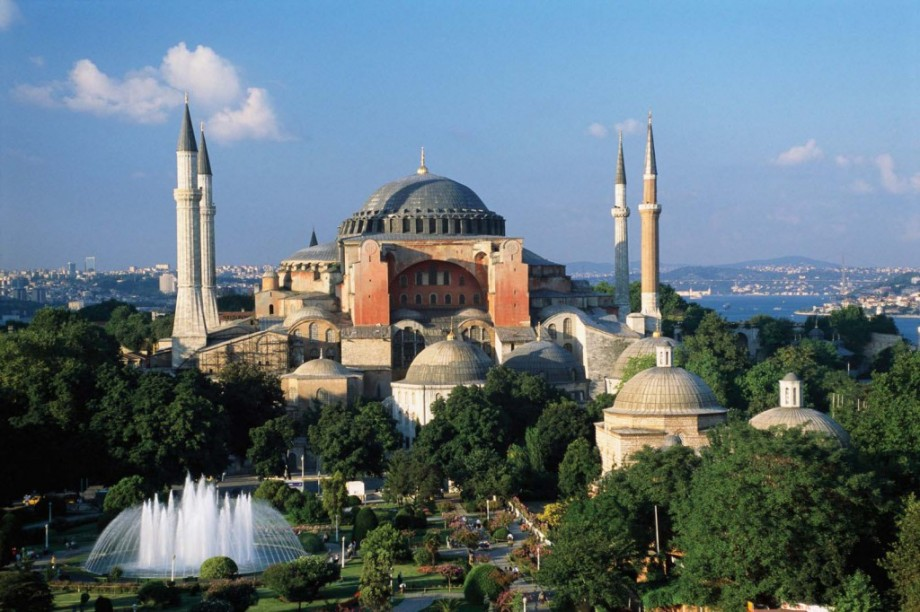

Ласкаво просимо до Туреччини.Найпопулярніші місця

СтамбулСтамбу́л або Істанбу́л (тур. İstanbul), до 1930 — Константинополь (дав.-гр. Κωνσταντινούπολις) — найбільше місто Туреччини та Європи, п'яте місто світу за кількістю населення (станом на 2016 рік — 14,8 млн осіб). Важливий морський порт, великий промисловий та культурний центр Туреччини. Розташований на узбережжі Босфору, має велике міжнародне, історичне та культурне значення.

АланіяАланія (тур. Alanya) — місто в Туреччині за 120 км на південь від Анталії, великий морський порт та курорт. До міського округу Аланія, крім власне міста, також відносяться приміські курортні селища (Інжекум, Конакли, Авсаллар, Махмутлар та деякі інші). Постійне населення міста становить трохи більше ніж 100 тис. осіб, проте в літньо-осінній сезон фактичне населення в кілька разів більше через великий наплив туристів.

Софійський соборСтамбу́л або Істанбу́л (тур. İstanbul), до 1930 — Константинополь (дав.-гр. Κωνσταντινούπολις) — найбільше місто Туреччини та Європи, п'яте місто світу за кількістю населення (станом на 2016 рік — 14,8 млн осіб). Важливий морський порт, великий промисловий та культурний центр Туреччини. Розташований на узбережжі Босфору, має велике міжнародне, історичне та культурне значення. |
||
Економічна столиця Туреччини — Стамбул. Стамбул — місто, що лежить на двох континентах, Європі та Азії. |
Туреччина – країна, яка у туристів стійко асоціюється з пляжами, нескінченними ринками, сувенірами і стародавніми пам’ятками. Але пляжами гідності турецької землі аж ніяк не обмежуються. І далеко від морського узбережжя тут можна знайти багато, дуже багато цікавого |
Найбільший у світі алмаз – діамант Кашікчі (ложечника) знаходиться в палаці Топкапи в Стамбулі. |
Made by Kindrak Iryna |
||